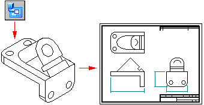
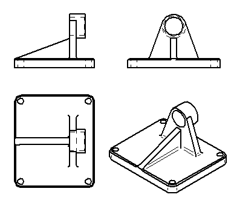
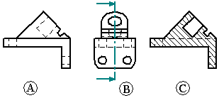
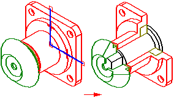

Drawing view creation
You can make a drawing in Solid Edge using several types of drawing views: 3D part views, 2D views, and predefined PMI model views. The drawing can contain dimensions and other annotations that describe the size of a part or assembly, the materials used to create it, and other information.
You can place any number of drawing views on a sheet. You can also modify the characteristics of a selected drawing view using the Properties command on the shortcut menu.
You can add a drawing view caption, and you can automate drawing view captions by defining them as part of the drawing view style.
For more information about creating a 2D view, see the Help topic, Creating 2D drawing views.
For more information about creating a 3D model view, see the Help topic, Creating 3D model views with PMI.
Part views
You can create part views of any Solid Edge part, sheet metal, or assembly document (.par, .psm, and .asm file types). Multiple part, sheet metal, and assembly documents can be used as the basis for part views in a draft document. To document foreign data, first convert the data into a Solid Edge document.

Creating and placing a primary part view
You can use the Drawing View Creation Wizard to create a primary view of a 3D part or assembly. A primary view is simply the first view placed on the drawing.
-
You can create a drawing starting from a draft document, by selecting the Home tab→Drawing Views group→View Wizard command
 .
. -
You can create a drawing starting from a part, sheet metal, or assembly model document using the File menu→New→Drawing of Active Model command
 .
.
After you choose a part model, the primary part view is displayed in dynamic preview mode. You can position the view anywhere on the sheet. Before you click to place it, you also can change the drawing view scale, formatting, and view orientation using the options on the Drawing View Creation Wizard command bar.
-
If you selected an orthographic view orientation as the primary view to place, such as a top or front view, you can fold other principal views from it by moving the cursor to the right, left, up, down, or diagonally, and clicking to place each one.
Drawing view placement mode ends when you press Esc.

-
If you selected a pictorial view as the first view to place, then drawing view placement mode ends after you click to place the pictorial view.
Creating drawing views automatically
You can create drawing views quickly and automatically by dragging a Solid Edge document onto a drawing sheet.
-
When you drag an assembly model onto an empty drawing sheet, an isometric view is created.
-
When you drag any other model file onto an empty drawing sheet, front, top, and right views are created.
You also can drag a model onto a Quicksheet template. With a Quicksheet template, you can customize the view types and properties, save the document as a template, and reuse it with any model you want. The views remain unlinked to a model file, but retain their properties. Or you can use one of the templates delivered with Solid Edge in the Quicksheet folder. Included assembly templates (metric and English) consist of one isometric view, parts list, and auto-balloon enabled. Included part templates (metric and English) consist of front, top, and right orthogonal views, and one isometric view.
Creating additional part views
You also can create additional part views using the following commands:
You can then use those part views to create more part views. For example, if you create a principal view (B) based on the primary view (A), you can create a section view (C) based on the principal view.

Creating 2D drawing views of 3D sections
Rather than creating a 2D section view using the Section view command in the Draft environment, you can create 2D drawing views of 3D section views cut in the model. A 3D section view simulates the removal of material from a model and exposes internal features.
In a part, sheet metal, or assembly document, you can use the Section command on the PMI tab to create 3D section views. You can add PMI dimensions and annotations to the 3D section view.
You then can use the Drawing of Active Model command on the File menu to place a fully documented 2D view of the 3D section on a drawing sheet.
After placing the drawing view, you can apply the 3D section to the 2D view using the Sections tab in the Drawing View Properties dialog box.

For more information, see the following help topics:
Creating drawings of a PMI model
You can produce drawings of model views containing product manufacturing information using the Drawing View Creation Wizard. The display data contained in the model view—view orientation, 3D sections, and PMI—is captured on the drawing. PMI text copied to the drawing view retains its three-dimensional aspect.
Options on the Drawing View Wizard let you choose:
-
A 3D PMI model view as the drawing view source.
-
Whether to copy the model view PMI dimensions to the drawing view.
-
Whether to copy the model view PMI annotations to the drawing view.
Once the drawing view is created, you can clear these options on the General page of the Drawing View Properties dialog box to turn associativity on or off with the model view:
-
Include PMI Dimensions From Model Views check box.
-
Include PMI Annotations From Model Views check box.
To learn how to create drawings of PMI model views, see Create a PMI drawing view.